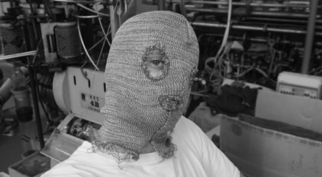

/audrey_desjardins
(16_january_2022)
This week we had the pleasure of assisting to a talk from Audrey Desjardins,
an Industrial Designer and Researcher from Canada, currently teaching at University of
Washington, Seattle.
Audrey has worked a lot with design as a mode of inquiry. She thinks design needs to
provoke a relfection and it has to be focused on asking questions, not only solving
problems. She is also an enthusiast of all the first person methods, as she believes
this is the best way to get to know the reality of what you are studying.
During the talk, Audrey explained some of the projects she had been working on lately, and
two of them more in depth: 'Living in a prototype' and 'The odd interpreters'.
The first one consisted of all the process of building a house inside a van and using this
as a data collection method. They took pictures of each step, timelapses and used a travel
diary to collect data, and then they published the whole project on Instructables. She defined
it as an dutobiographical design.

For the second one was directly related to data collection but in an experimental way. It
was a manner of physically showing how data is flowing all around us, not only in a digital
meaning but also in an environmental meaning (like the sun).
Having the chance of getting to know all these projects it's not only interesting but also
extremely useful. Once you see the process of others, then you can get inspired and maybe
use some techniques or procedures also for your own work. Thanks Audrey for this masterclass
of design!
More about her here:
www.audreydesjardins.com
_________________________________________________________________________
/laura_forlano
(30_january_2022)
This second session of Future Talks was carried out by Laura Forlano, a writer, social scientist
and design researcher, currently working at IIT Institute of Design (Chicago).
Laura told us her experience of being diabetic since 2018 and how this has changed completely her
life. She explained how now her life depends on an AI device that keeps her alive by pushing insulin
through her veins when it is needed. Also how she had some trouble sleeping because her old device
was sending her notifications all the time, inclusively during the night. The fact of waking up every
15-30 minutes because of the notification had as a consequence a severe sleep deprivation, with
the inherent results.
Now, she has another device that is much more efficient called "The MiniMed 670G". Thanks to
technological advances, this device automatically adds the necessary quantity of insulin by analysing
sugar in the blood. This improvement makes it unnecessary to send notifications every 20 minutes.
However, she reflected, tech is not perfect and probably will never be, so we have to choose when to
disobey tech's rules.
As a design researcher, she sees theory as design material, and this is why she explores theories
of the posthuman, questioning the binaries and fighting also for feminism. She is also enthusiastic
about autoethnography in design and using a vignette as a way of documenting.
Finally, Oscar highlighted another slide she shared about 'What if' questions. Asking yourself
'What if' directly brings you to create a hypothesis of something that could happen. Without these
kinds of questions, there wouldn't be improvements in many topics and probably everything would stay
the same. Mixing these questions with a subsequent intervention or experiment may provide very
valuable information from a topic.

More about her here:
www.lauraforlano.org/
_________________________________________________________________________
/sergio_urueña
(13_february_2022)
The first talk of Future Talks was carried out by Sergio Urueña, an interdisciplinary scholar
focused on philosophy in relation to science. As a researcher, he was exploring deeply the
relation of technology with society and how both things define how the future will be.
Sergio described two ways of defining the future: technological determinism and social
constructionism. In the first approach, tech is what defines how the future will be, so society
changes according to new technological discoverings and advances (or failures). In the second one,
society evolves separately from tech and people is who define how the future will be without
taking into account other factors. However, both of these theories are quite radical and each one
has positive but also negative aspects, this is why a better approach would be the socio-technical
one, in which both tech and society have the same importance.
He also talked about responsibility regarding the future, and how every action has a consequence.
He said a really interesting sentence "People don't know what what-they-do does". I think this is
a certain reality in our society, where we consume massively and this has catastrophic consequences.
The ones who created this system didn't know how this could end. Also, on a smaller scale, we as
designers need to think about the cycle of life of our products in order not to collaborate on this
huge mass of trash existing on our planet. And this refers to many other projects and stuff we do in
our daily lives.
Finally, Sergio also left us some questions we should take into consideration when developing our
projects. All the questions referred to responsibility towards the planet and the communities we are
designing for, as well as how can we engage with people and make our projects worthy and meaningful.
For sure they are a good way to reflect and to take our projects further in meaning and form.
Future-making is future-taking.
_________________________________________________________________________
/saúl_baeza
(20_february_2022)

The last session of Future Talks was carried out by Saúl Baeza, a creator and design researcher
based in l'Hospitalet de Llobregat. He is the director of DOES Work, a design consultancy with the
aim of exploring those things related to identity on any scale. He is also participating in VISIONS
BY magazine and in Understanding Design, an association focused on the possibilities of contemporary
design.
Throughout the talk, Saúl introduced us to some of the projects he and his company have been carrying
out during the last years. The first one he showed was a really interesting project called
Time Machine
for UNICEF and in collaboration with Domestic Data Streamers, where they interacted with
people and played with the concept of time in many different areas. It was not just an installation
but a huge interdisciplinary experience for the users.
He presented some other projects such as one where they collected body hair and used it as part of
the material to build objects or an experiment carried out by himself where he was wearing different
masks while analysing people's reactions to seeing him. For this second one, I liked what he said
"Hiding your identity can make you easier to identify" in relation to the masks he was wearing.
At the end of the talk, I asked him if all those projects usually get further or if all that stays
as design research. He answered many of the projects are just for the sake of research and
investigation and that they are not trying to take them further, they don't want to start creating a
business or a company selling products, they explore design because they like it. Finally, he said:
"I'm young and I want to keep exploring, at least for some time more, then we will see". And I
completely agree with those words.
More about the projects here:
www.does-work.com/